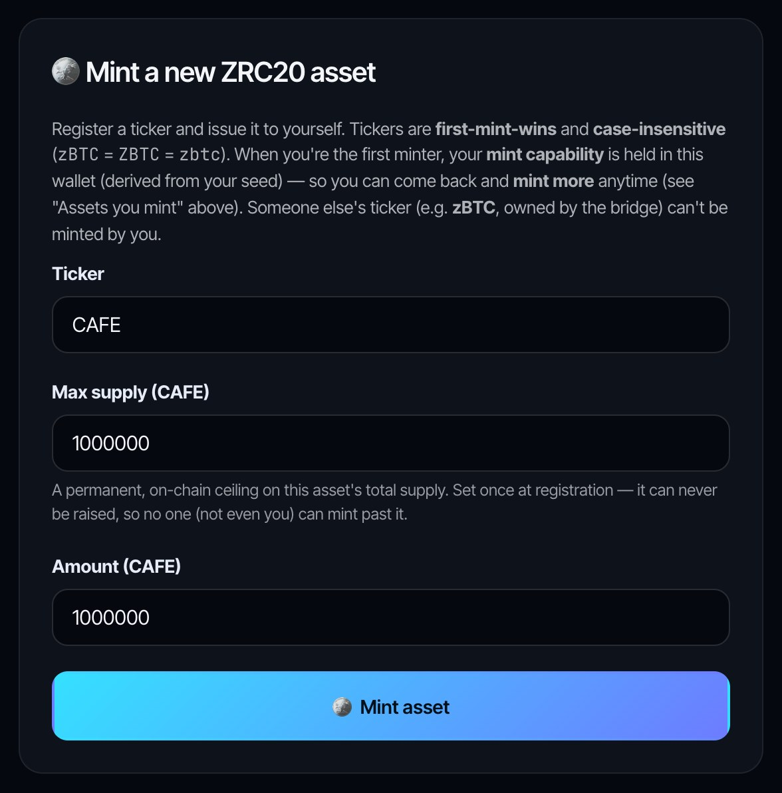
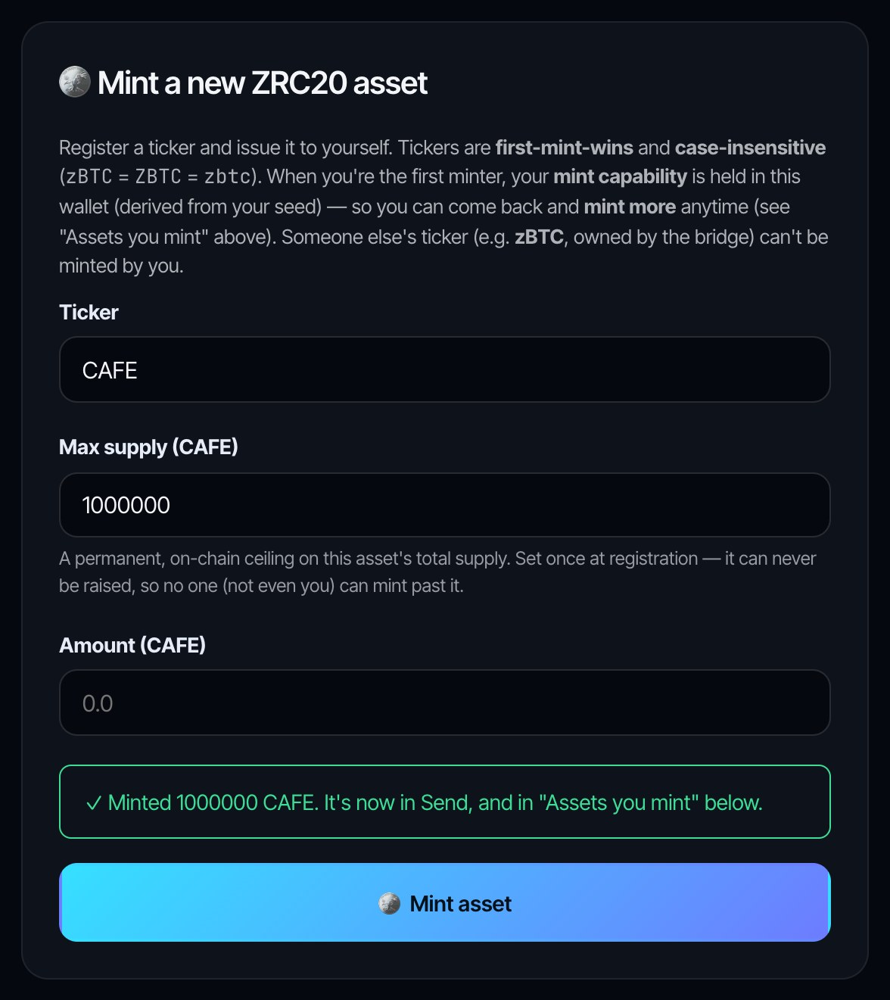
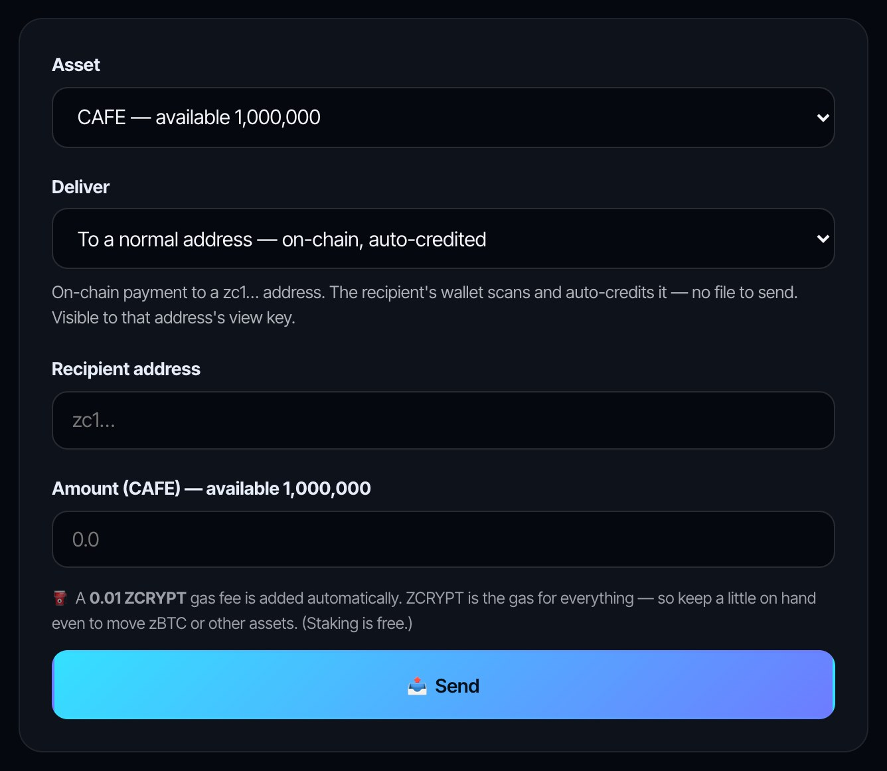
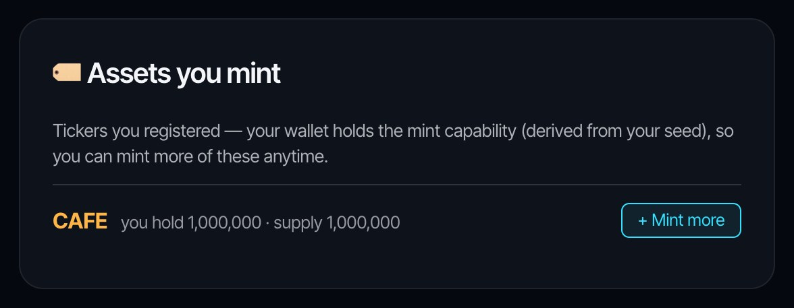

Make your own coin
You do not need Solidity, Vyper or any programming language to issue a coin on ZCrypt. Choose a ticker, set a supply and click Mint. From that moment the coin belongs to you.
01
On most networks a new coin is a program. Someone has to write it in Solidity or Vyper, compile it, deploy it and pay for the deployment. If the program has a bug, the coin can be drained or frozen, which is why serious projects pay for audits before they launch.
On ZCrypt a coin is not a program. Issuing coins is built into the network itself, and every coin follows the same rules as ZCRYPT. There is nothing to write, so there is nothing to get wrong.
| A token contract elsewhere | A coin on ZCrypt | |
|---|---|---|
| What you need to know | Solidity or Vyper, and how to deploy a contract | A name and a number |
| What you do | Write, test, audit and deploy code | Fill in two fields and click Mint |
| What can go wrong | A bug in your contract | No contract exists. The rules are the network's own |
| Privacy | Every balance and transfer is public | Sender, receiver and amount are hidden, as with ZCRYPT |
02



Screens from the desktop wallet, with sample data. CAFE is an example name.
03
The right to mint your coin lives in your wallet and nowhere else. It is derived from your recovery phrase, so there is no admin account, no company and no server that could mint it for you or take it from you.

Every mint must be signed by your key. Anyone else who tries is rejected by every validator.
The ceiling you chose is written into the chain when the coin is registered. It cannot be raised later by anyone.
Payments in your coin hide the sender, the receiver and the amount, in the same pool as every other coin.
Your coin can be swapped for any other coin on ZCrypt, directly between two people. See how trading works
04
More in Protocol. Get the wallet